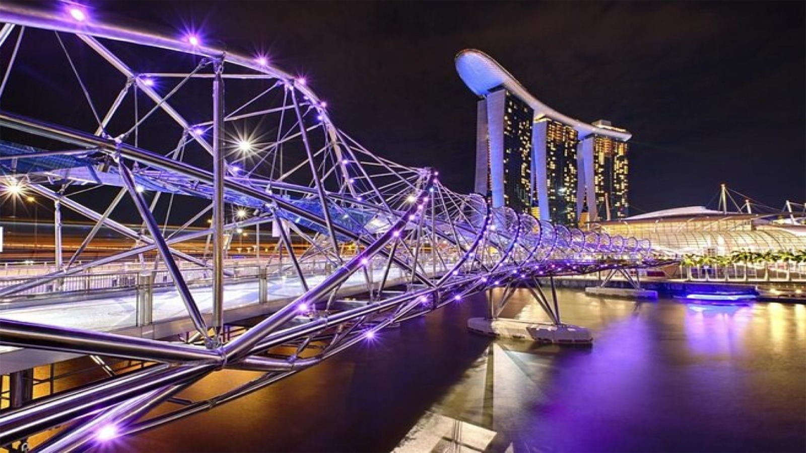
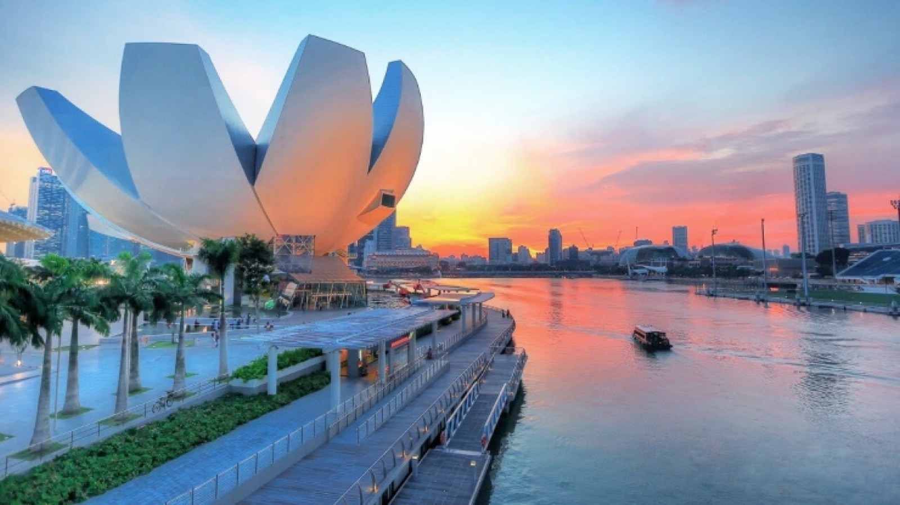
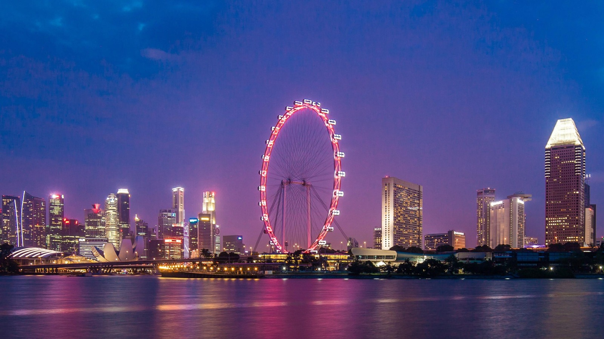
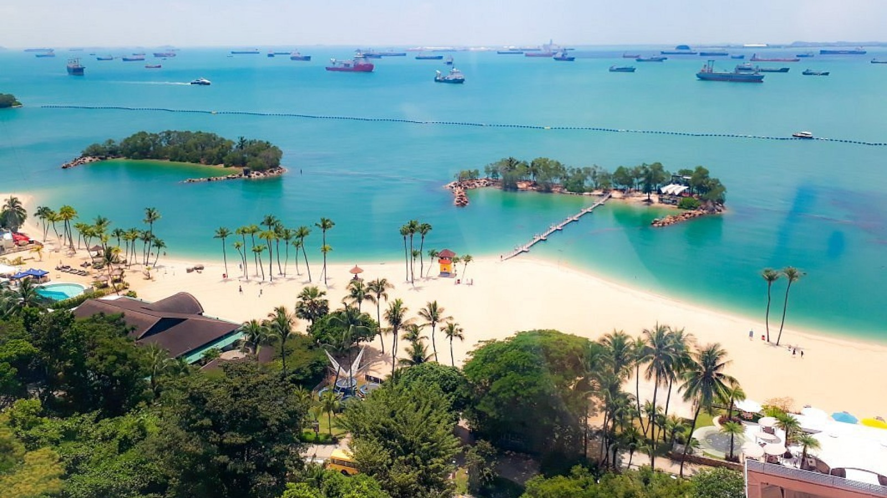
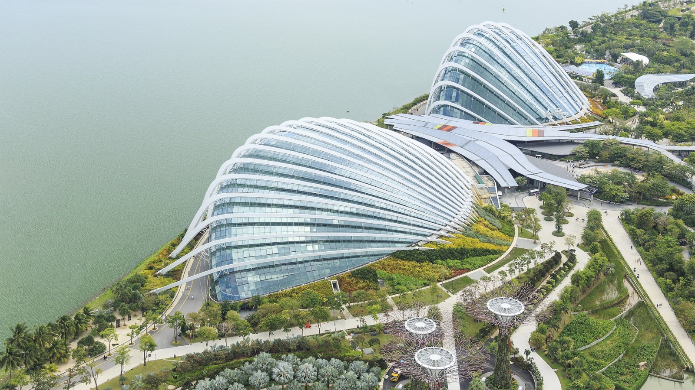
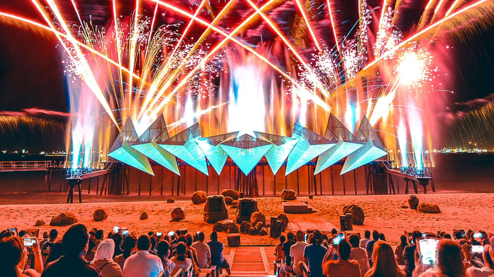

Standard Package
- Costs:SGD 2000
- Days: 5 days,4 nights
Welcome to Serfect, your ultimate guide to the best travel experiences. If you're planning a trip to Singapore and want to make the most of your time there, our Best Offer 2000 standard Package is just for you. With this 5-day, 4-night package, you can explore the city's top attractions, savor the best cuisine, and have a comfortable stay at the Siloso Beach Resort Sentosa.
Day 1
Start your trip with a visit to the stunning Jewel Changi Airport, one of the most impressive airport complexes in the world. From there, check in to the Ibis Singapore on Bencoolen Hotel, where you'll be staying for the duration of your trip. For lunch, we recommend trying the famous Singapore ZamZam Indian restaurant, where you can indulge in some delicious traditional dishes. After lunch, take a stroll through the vibrant Haji Lane and Kampong Glam areas, where you'll find an eclectic mix of street art and quirky shops. Next, explore Orchard Road, Singapore's famous shopping district, where you can browse luxury boutiques and flagship stores. For dinner, head to Clarke Quay, a riverside dining and entertainment hub. Finish off the night with a performance at the Victoria Theatre and Victoria Concert Hall, a historic venue that hosts a wide variety of events.
Day 2
Start your day with a delicious breakfast at the hotel, and then head out to explore more of the city. We recommend visiting the Art Science Museum and Marina Bay Link Mall, where you can experience some of Singapore's cutting-edge architecture and design. For lunch, try the Marina Food Court, where you can sample some of the local street food favorites. After lunch, head to the Flower Dome, a beautiful conservatory filled with exotic plants and flowers. In the evening, take a walk around Marina Bay and soak up the city's iconic skyline. Stop by some of the famous landmarks, such as the Apple Store, The To-Gather Bench, The Shoppes, and Sands Expo and Convention Centre. For dinner, we recommend trying the delicious ramen at Ippudo restaurant.
Day 3
After another tasty breakfast at the hotel, take a trip to Sentosa Beach, where you can spend the day exploring Universal Studios and the S.E.A. Aquarium. For lunch, try some of the local delicacies at the Universal Studio Food Centre. In the evening, head to the Wings of Time show, a spectacular display of lights, water, and fire. To cap off the night, enjoy a dinner at Osia Steak and Seafood Grill.
Day 4
On your final day, enjoy one more breakfast at the hotel before heading out to the East Coast Park, one of Singapore's largest parks with a beautiful beachfront. Spend the morning relaxing on the beach or taking a walk through the park. For lunch, head to a seafood restaurant like Jumbo Seafood and try some of the local dishes like chili crab or black pepper crab. In the afternoon, visit the Singapore Flyer, a giant Ferris wheel that offers panoramic views of the city. Finally, end your trip with a visit to the famous Lau Pa Sat hawker center for dinner, where you can try even more of the local dishes. After dinner, it's time to head back to the hotel and prepare for your departure.
Day 5
You'll have breakfast at your hotel before heading back to the airport to conclude your trip.
You'll have breakfast at your hotel before heading back to the airport to conclude your trip.